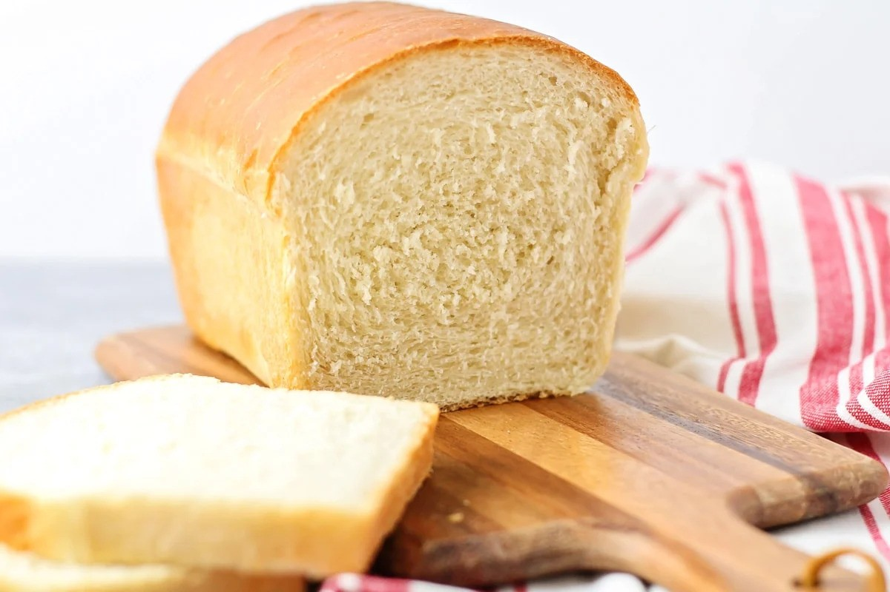

Bread Recipe
Home

This BEST bread recipe makes the most deliciously fluffy loaf of white bread. It tastes so much better than store-bought!
Ingredients
- 2¼ teaspoons active dry yeast
- 2¼ cups warm water
- ¼ cup sugar, plus 1 pinch
- 1 tablespoon salt
- 2 tablespoons vegetable oil
- 5½ – 6½ cups bread flour
- butter for topping, (optional)
Steps
- In a large bowl or the bowl of a stand mixer, dissolve the yeast in warm water with a pinch of sugar. When the yeast is bubbly and foamy, add the sugar, salt, oil, and 4 cups flour, and mix until smooth.
- Add remaining flour, ½ cup at a time, to form a soft, smooth dough. The dough should stick just slightly to your finger when touched, but not be overly sticky. Knead for 5-7 minutes, until smooth, then roll into a ball.
- Place the dough in an oiled bowl, turn over once to coat the top with oil, and cover with plastic wrap. Let rise for one hour, or until doubled.
- When the dough has risen, punch it down gently and divide it in half. Roll each half of the dough into a long rectangle about 8 inches wide. Roll the dough up, starting at the short edge, to form a cylinder that is approximately 8 inches wide. Repeat with the remaining dough.
- Place the dough, seam side down, into lightly greased bread pans, and cover with plastic wrap. Let rise for one hour, or until the dough is ½ – 1 inch higher than the top of the pan.
- Preheat the oven to 375°F. Bake for 30-35 minutes or until the loaves are golden brown and sound hollow when tapped. Brush with melted butter, if desired. Remove to a cooling rack and cool before slicing. MAKES 2 LOAVES.